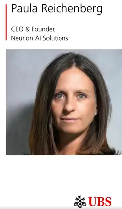

Paula Reichenberg featured by UBS for her approach to leadership
We are proud to announce that our CEO and founder, Paula Reichenberg, has been featured by UBS in a LinkedIn post on her distinctive approach to leadership: building on transparency, expertise and the strength of a well-chosen team.
For Paula, self-reflection and openness are not weaknesses. They are major strengths, especially in fast-growing start-ups, where strong collaboration is essential to success.
At Neur.on AI Solutions, Paula applies this philosophy to lead our LegalTech innovation. Her aim: secure, AI-based solutions that simplify the complex multilingual workflows of lawyers and international legal experts.